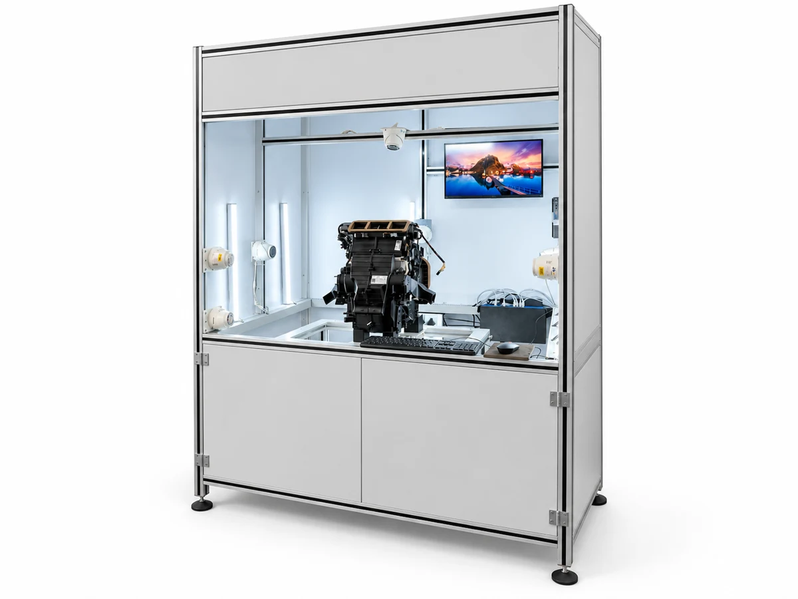
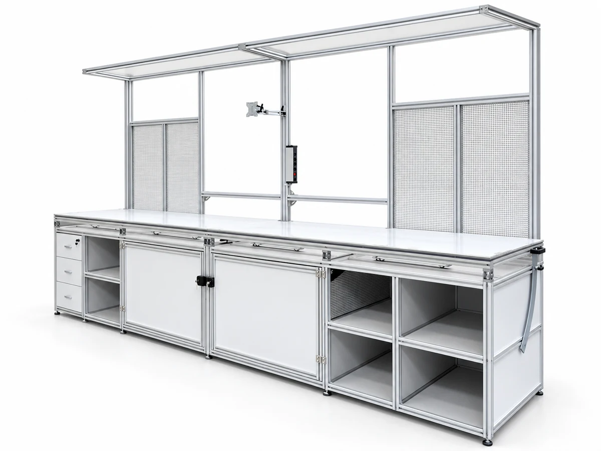

Vision Testing System
Enclosed inspection cell with camera mounting, integrated display and controls for repeatable in-line testing.
View configurationProducts / Inspection · End-of-line testing
Inspection cells and test benches designed around your component and quality checks.
Discuss your application
Explore the range
Enclosed inspection cell with camera mounting, integrated display and controls for repeatable in-line testing.
View configuration
Bench-top vision test station with controlled lighting and an operator display for component checks.
View configuration
Full-length inspection bench with overhead frame and storage below, for end-of-line quality checks.
View configurationPlan the right fit
What needs to be inspected, and how is it presented?
Which conditions determine an acceptable part?
How should results reach your operators or control system?
Useful to sharePart drawings or samples, inspection criteria, and the expected flow of parts.
Prepare your briefRelated capability
Let’s make it work